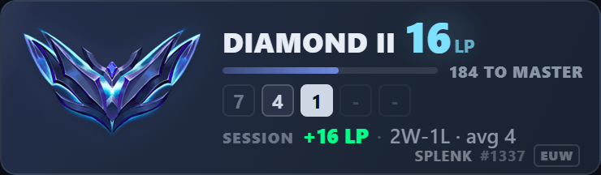
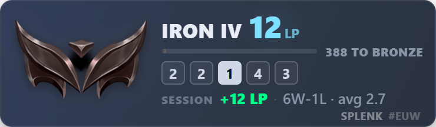
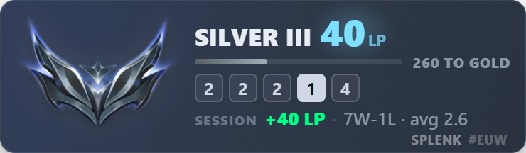
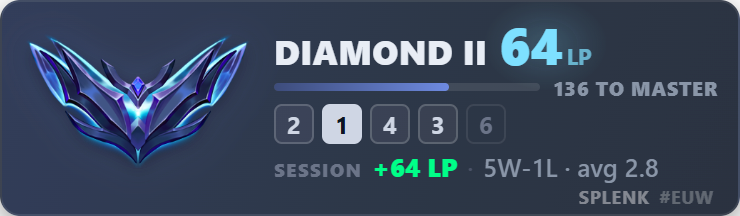
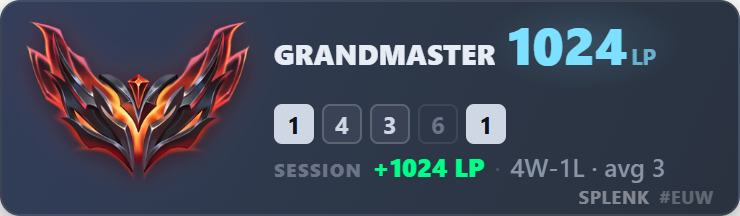
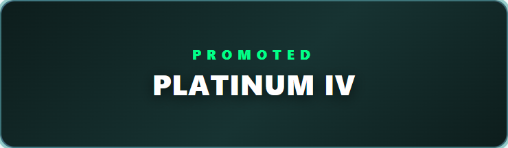
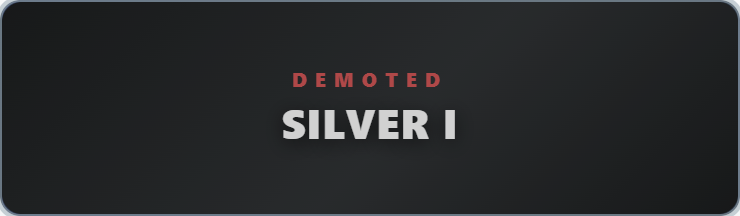

TFT Live Overlay
Your Teamfight Tactics rank, LP swings and session record — live on stream, straight from the Riot API.


The overlay card as it renders on stream. The sheen loop is tightened here — the real animation sweeps once every 9s and sits transparent in between, so this preview keeps the ~1s sweep and collapses the idle stretch into a single held frame.
A simple desktop app that shows your Teamfight Tactics rank, LP gain/loss, session gains, and recent placement history on your Streamlabs or OBS stream with low latency — it talks to the Riot API directly, so there's no third-party service in the path adding its own rate limits.
What's on the card
| Rank + LP | Current tier, division and LP. The LP figure rolls to its new value and a ▲/▼ marker shows the direction. |
| Progress bar | LP remaining to the next tier. Hidden at Master+, where promotion is population-gated rather than an LP target. |
| Placement strip | Your last 5 finishes, newest first — tonal, so it never competes with the LP readout. |
| Session line | LP gained or lost this session, W-L record, and average placement. |
| Tier colours | The accent ramp, crest bloom and promotion banner all repaint to the tier you're actually in. |
Every tier, and the moments that matter






A tier change takes the card over for ~2.6s in the colour of the tier you landed in — the single most clippable moment on a ranked stream.
Running it
npm install
npm startAdding it to Streamlabs / OBS
Go to Dashboard → click Copy URL → add a Browser Source in
Streamlabs pointing to that URL (http://localhost:3000/overlay.html by default).
The card itself is 370×108. Set the Browser Source slightly larger than that (say 400×130) — the page background is transparent, so surplus source area is invisible, while a source smaller than the card clips it.
Want it bigger? Add
?scale=1.5to the URL. That re-renders the card at the larger size, which stays sharp — unlike resizing the Browser Source in OBS, which stretches an already-rendered 370×108 texture and goes soft. Set the source to the scaled dimensions to match.
Trying it without playing a game
The Test tab drives the overlay through mock rank and LP changes without spending any of your API key's quota — simulate a win, a loss, a promotion, a demotion or an error and watch the card react.